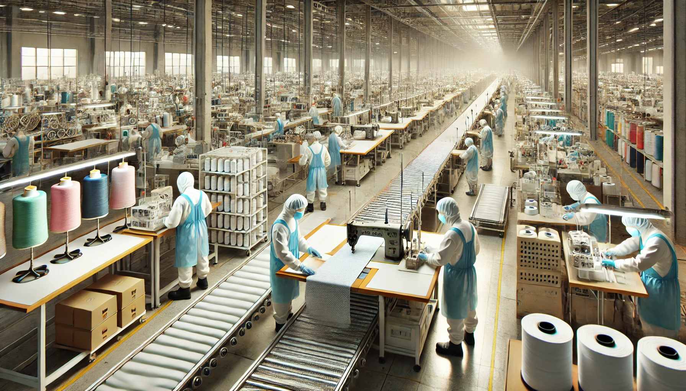
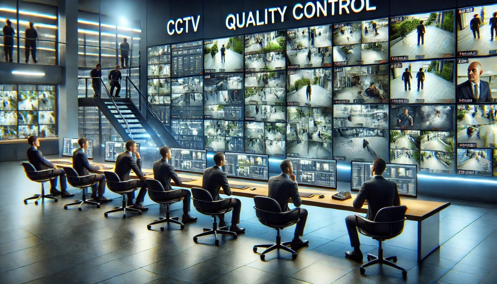
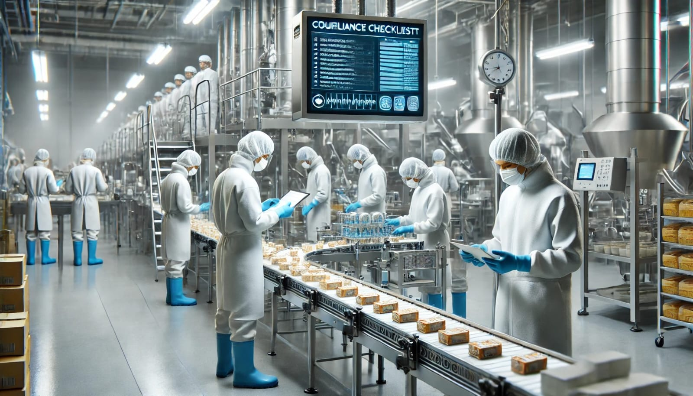

Prevent theft and misplacement with real-time monitoring.
Boost efficiency by keeping on eye on opration.
Maintain workplace safety standards with 24/7 surveillance.
cut down on in-person supervision expenses with remote monitoring.
countinues surveillance of your premises.
real time alerts for any problem.
take action to Optimize oprations and minimize risks
A textile factory experienced frequent slowdowns on the assembly line. By analyzing live footage, Hawk Eye surviellance’s team identified inefficiencies in material handling. With this insight, management took corrective action to improve workflow.

A beverage manufacturing plant noticed defective bottles reaching the packaging stage. Hawk Eye surveillance’s real-time monitoring flagged irregularities in machine operations, allowing immediate adjustments to maintain product quality.

A logistics warehouse struggled with misplaced packages, causing delays and confusion. Hawk Eye surveillance’s team monitored handling procedures and identified careless stacking, helping supervisors implement better storage and organization practices.
A dairy plant required strict hygiene adherence, but some workers overlooked sanitization protocols. Hawk Eye surveillance’s alerts helped management enforce regulations, ensuring safety standards were consistently met.
